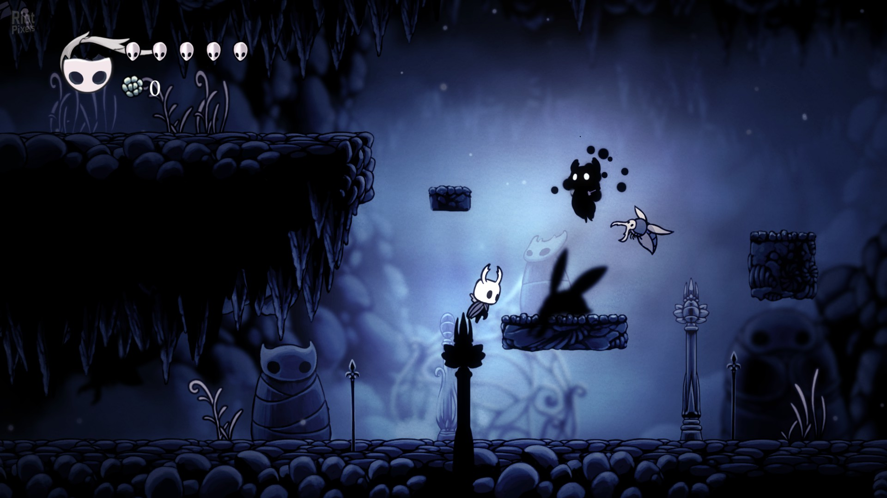
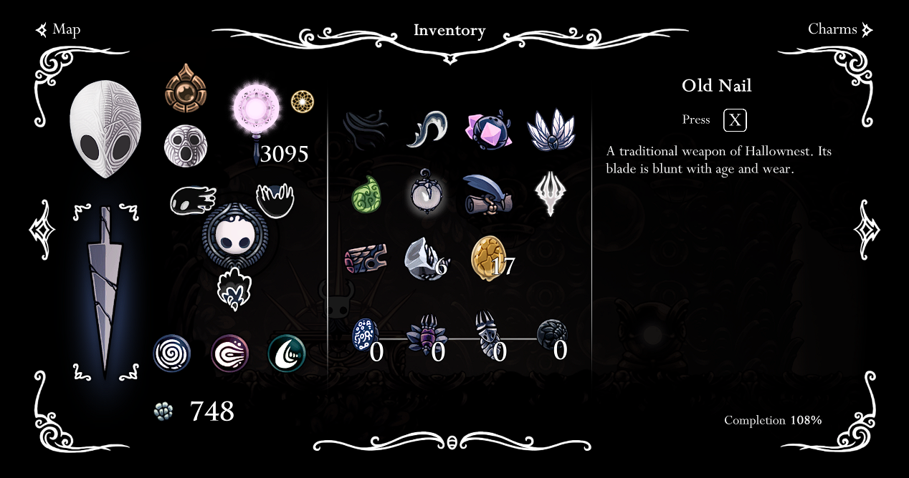
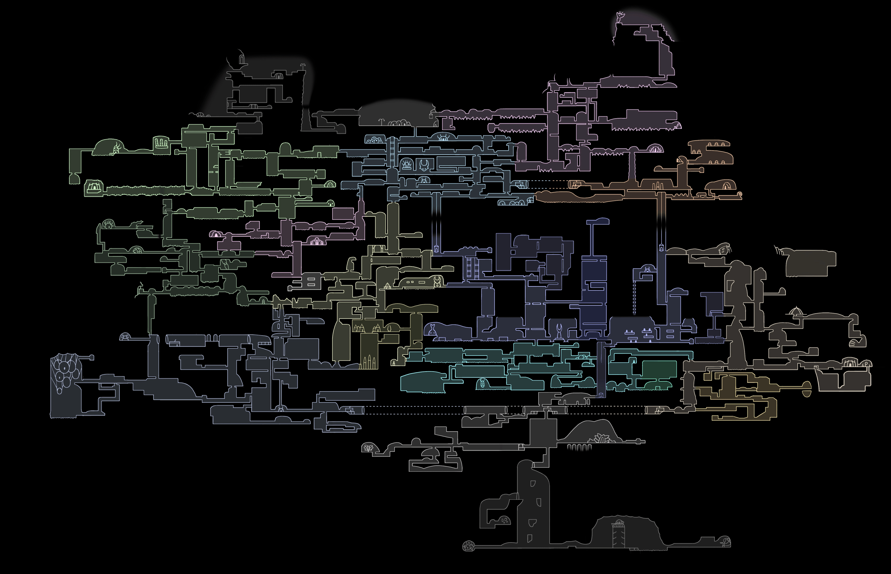

El Caballero cuenta con una espada para atacar a los enemigos, así como habilidades especiales que se desbloquean a medida que se avanza en el juego. Los combates son desafiantes y requieren habilidad y estrategia para derrotar a los enemigos más fuertes.
El juego se basa en la exploración de un mundo interconectado lleno de saltos, obstáculos y acertijos. El jugador debe saltar y esquivar para superar los obstáculos y llegar a nuevas áreas.
A medida que el jugador avanza en el juego, puede encontrar mejoras para el Caballero, como nuevas habilidades de combate, herramientas para navegar el mundo subterráneo y mejoras en la salud y la resistencia del personaje.
El mundo subterráneo de Hollow Knight es vasto y está lleno de secretos y áreas ocultas. El jugador debe explorar el mundo para descubrir nuevos lugares, personajes y objetos que ayuden en la aventura.
